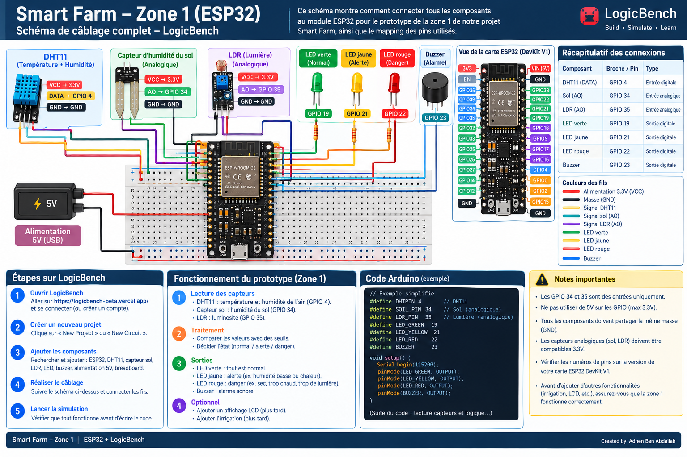

Tableau de Bord — Zone 1
Supervision complète de la Serre Maraîchère, télémétrie en temps réel et état général
Zone 1 — Serre Maraîchère Principale ESP32 ACTIF
Culture sous serre : Tomates, Poivrons & ConcombresTélémétrie en Direct (ESP32 Zone 1)
Évolution temporelle de la température, de l'humidité de l'air et du sol
Sondes & Chaîne d'Acquisition Zone 1 LogicBench Prototype
Acquisition sur microcontrôleur ESP32-WROOM-32 (115200 bauds)
Diagnostic Agronomique — Serre Maraîchère :
La température de 24.5°C et l'hygrométrie relative de 58% sont situées dans la zone de confort thermique optimale pour les cultures maraîchères (tomates et poivrons). Le sol présente une réserve hydrique suffisante à 58% (valeur brute ADC 2150, bien en deçà du seuil de sécheresse fixé à 2800).
Étalonnage & Caractérisation de la Sonde d'Humidité du Sol
Détail des bornes de conversion analogique-numérique (ADC 12 bits, plage 0–4095) :
Cuve Principale d'Irrigation
Alimentation de la Serre Maraîchère Zone 1Télémétrie du Capteur HC-SR04
Données physiques ultrasoniques et équations de hauteur d'eau
Équation Hydrostatique Implémentée :
Lorsque la distance mesurée dépasse 160 cm (niveau d'eau restant < 20%), le système déclenche automatiquement l'alerte de seuil critique et coupe l'alimentation électrique de la pompe d'irrigation pour empêcher tout fonctionnement à sec.
Dynamique du Sol & Seuils Critiques
Comparaison entre la valeur brute ADC 12 bits et les seuils d'Alerte (2800) et de Danger (3500)
Distribution des Régimes
Proportion de temps en régime Nominal, Alerte et Danger
Cycle Solaire & Luminosité Ambiante (LDR LM393)
Évolution de l'indice photométrique reçu sur le GPIO 35
Afficheur LCD 16x4 Parallèle (Mode 4-bit)
GPIO 13, 14, 25, 26, 27, 32Simulation fidèle de la bibliothèque LiquidCrystal et de la routine updateLCD()
Signalisation Tricolore par LEDs
GPIO 19, 21, 22Indicateurs visuels physiques gérés par setOutputs()
- LED Verte (GPIO 19) : Allumée si toutes les conditions sont conformes (Normal).
- LED Jaune (GPIO 21) : Allumée en cas d'alerte (Temp ≥ 30°C, Sol sec ≥ 2800, ou défaillance DHT).
- LED Rouge (GPIO 22) : Allumée en cas de danger critique (Temp ≥ 35°C ou Sol ≥ 3500).
Schéma de Câblage Officiel (Guide ESP32 DevKit Zone 1)
Schéma de câblage officiel pour banc de test LogicBench et montage réel

Journal des Événements & Alertes Firmware (Zone 1)
Historique horodaté des alertes déclenchées par l'ESP32 avec causes réelles
| Horodatage | Origine | Gravité | Cause Diagnostiquée | Action |
|---|
Mode Manuel
Contrôle forcé des vannes et de la pompe d'irrigation par l'utilisateur, tout en conservant la protection anti-marche à sec.
Mode Automatique
Application stricte des règles déterministes et des seuils physiques configurés dans le firmware ESP32 Zone 1.
Mode Intelligent (IA)
Analyse multi-paramètres prédisant l'évapotranspiration pour déclencher l'irrigation aux moments thermiques les plus favorables.
Recommandations Intelligentes Générées par l'IA Moteur Actif
L'humidité du sol est stable à 58%. Il est suggéré de reporter l'arrosage au coucher du soleil (18h30) afin de réduire les pertes par évaporation superficielle de 35%.
Le réservoir est à 75% (3 750 L). L'autonomie calculée pour la Zone 1 est de 12 jours avec la consommation actuelle.
Boutons de Démonstration pour Soutenance Universitaire
Déclenchez instantanément les conditions réelles pour illustrer devant le jury la réaction en chaîne du système (LEDs, LCD, Alertes).
Seuils Firmware Configurables
Moniteur Série (115200 bauds)
Trames transmises par l'ESP32 sur la liaison série